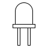

<div class="main-div">
  <mat-card class="card">
    <P class="titulo">Led Controller</P>
    
    

    <mat-slide-toggle class="btnstatus" *ngIf="isConected" [(ngModel)]="isTurnedOn" color="primary">{{statusLed()}}</mat-slide-toggle>

    <div class="estatusServidor">
      <span *ngIf="isConected" class="material-icons online">
      bolt
      </span>
      <span *ngIf="!isConected" class="material-icons offline">
      bolt
      </span>
      {{statusServer()}}
    </div>


  </mat-card>
</div>
